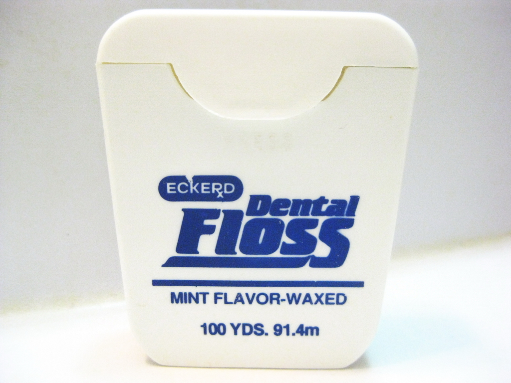
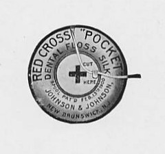

Things That Were Invented A Lot Earlier Than You Thought
Copy Machines
1913 Victorian copy machine.
Perms
1928
Dental Floss

Floss was invented in 1812 and was patented by Johnson & Johnson in 1898.
Staplers
McGill's Patented Stapler-Fastener in 1879.
Washing Machines
Motorized washing machine, 1906.
Exercise Equipment
Courtesy of
Andy B. via Creative Commons License.
Folding Bicycles
BSA Paratrooper Bike, 1898.
Ergonomic Keyboards
Microsoft Sculter Go ergonomic keyboard.
The round keyboard was revealed in the 1878 World' Fair.
Receipts
Ancient receipt for a delivery of beer.